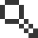

I agree to the recording and anonymous analysis of my voice for research and improvement purposes.
I agree to the collection and anonymous analysis of my typing input for research and service development.
seive page
14:22:09:12
Topic
chosenTopic
Frequency
LastUsed Date
Recorded frequency53
Typed frequency23
Total frequency76
53
Word
chosenWord
Frequency
3w ago2w ago1w agonow
Recorded frequency53
Typed frequency23
Total frequency76
Late Used Date
53
Related Words
chosenWord
layer page
Seive

Date Range
01. 04. 2025.
15. 04. 2025.
April2025
MOTUWETHFRSASU
Frequency
Type
Linguistic layers successfully archived.
Texture indicates a higher frequency of spoken usage compared to typed usage.
Color reflects recency: vividness means more recent use, gray indicates older data.